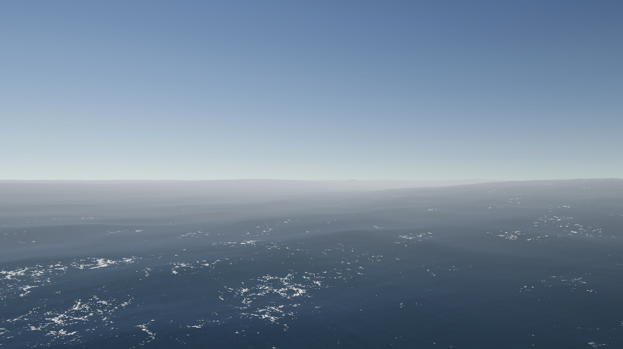

The same browser-run WebGPU water, pushed from a contained pool out to open-ocean and breaking-shore scale — spectral swell, depth-driven surf and foam, and a full underwater pass with god rays and depth fog.
Drag to look around · move toward the shore to watch the waves break. Needs a WebGPU browser (Chrome / Edge, Safari 26+, or latest Firefox) — if the frame stays black, open it fullscreen ↗.
// open sea — wind-driven swell, whitecaps and a hazing horizon
An experimental offshoot of the WebGPU Water project — the same Unity 6 / URP renderer running in the browser via WebGPU, but scaled up from a contained pool to a whole coastline. Where the pool is a 256² interactive heightfield, this build layers a large-scale spectral swell for the open sea, a depth-driven breaking-surf and foam system at the shore, and a full underwater pass with light shafts and depth fog.
Three regimes share one body of water: the open sea — wind-driven swell, scattered whitecaps and a hazing horizon; the surf zone, where the seabed rises, waves steepen and break into whitewater that washes up the beach; and the world below the surface, lit by refracted god rays and caustics that fade into blue depth fog.